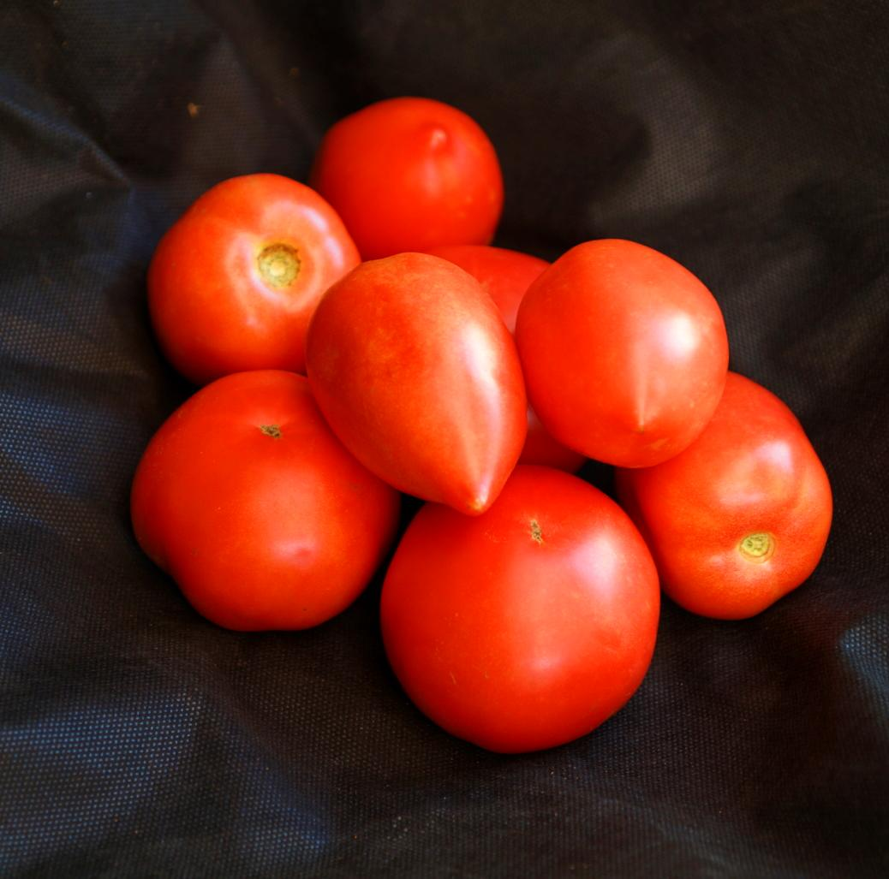
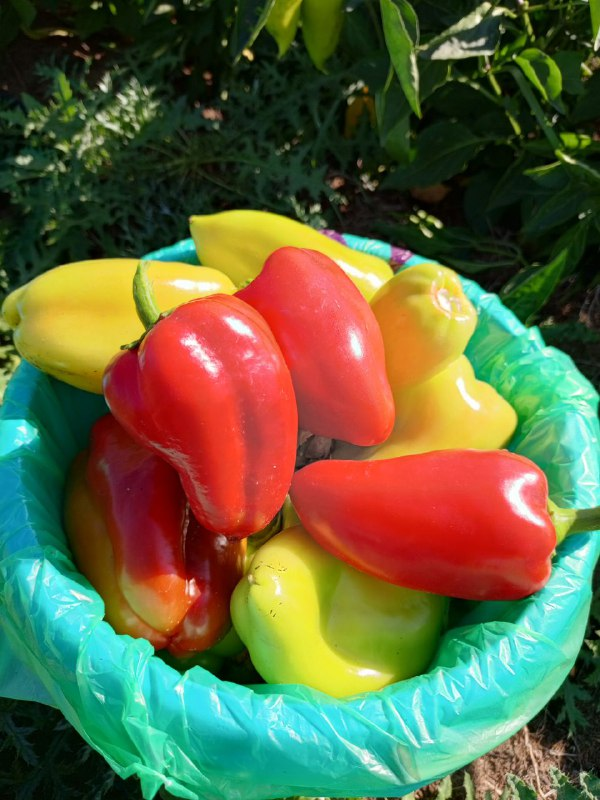
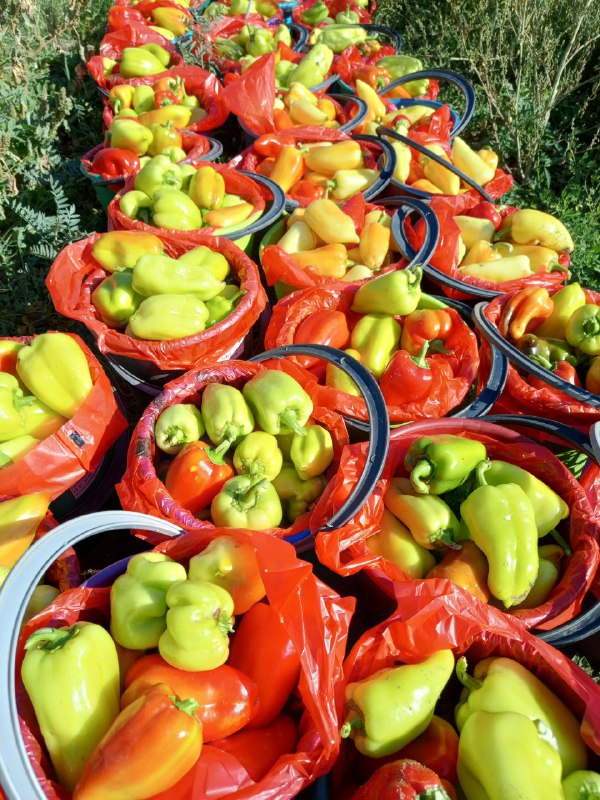
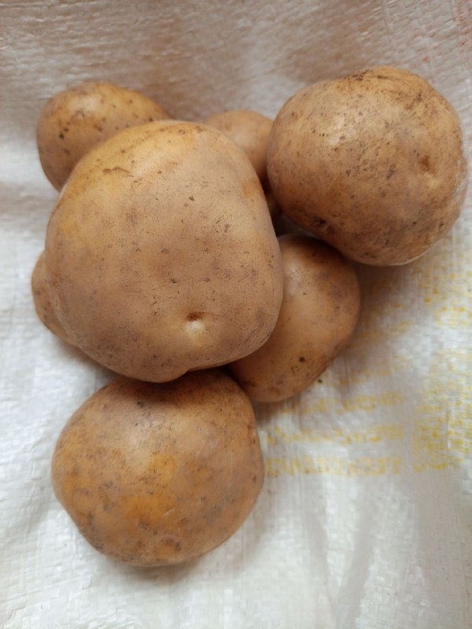
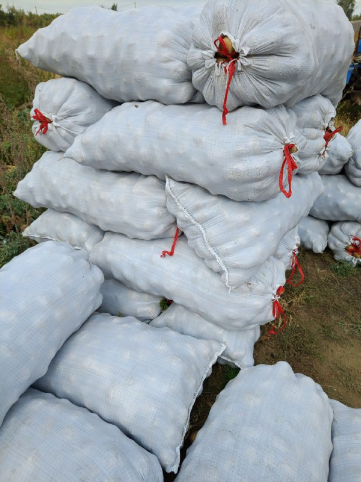
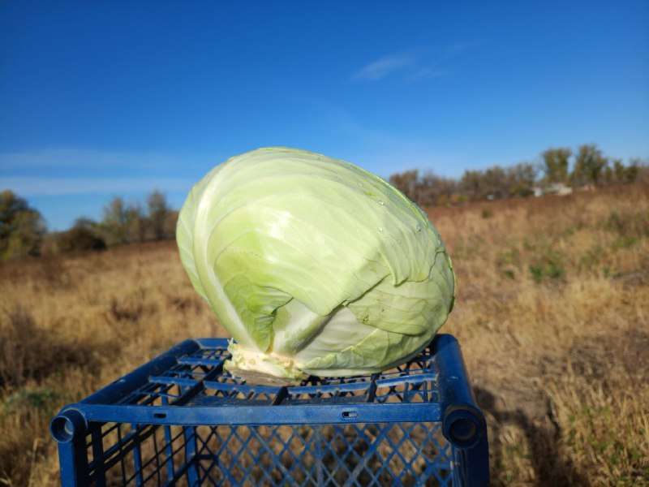
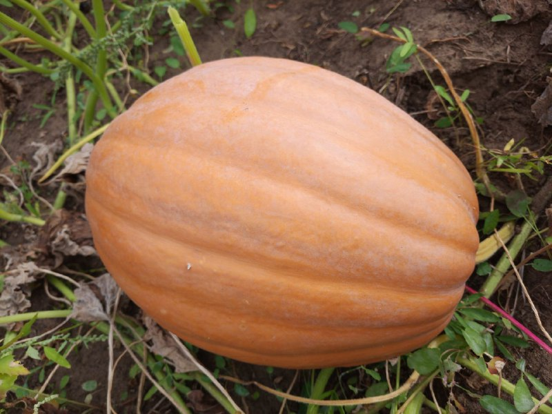
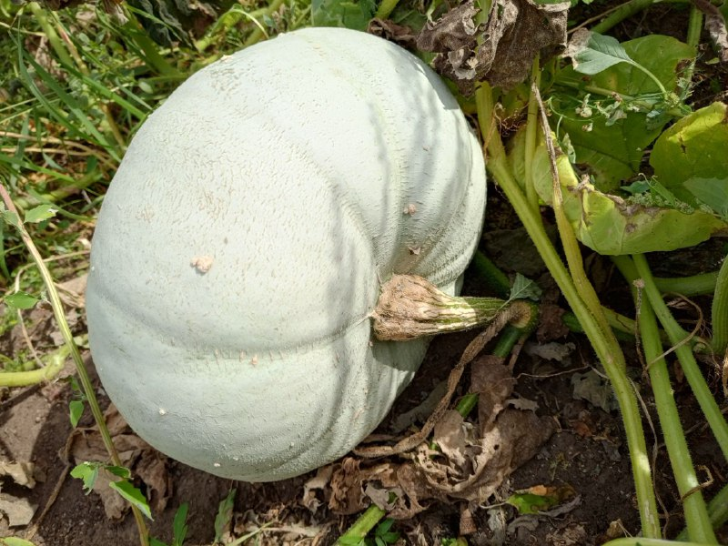

Свежие томаты с грядки

Сладкий болгарский перец

Щедрый урожай перцев

Рассыпчатый картофель

Заготовка картофеля

Хрустящая белокочанная капуста

Сладкая тыква

Мускатная тыква
Строим теплицы
Сочные помидоры с грядки. Разные сорта: сливки, черри, розовые.
Хрустящие свежие огурчики. Идеальны для салатов и засолки.
Сладкая сахарная кукуруза. Собираем в день продажи.
Свежая брокколи. Богата витаминами и полезными веществами.
Болгарский перец разных цветов. Сладкий и ароматный.
Сладкая сочная морковь. Выращивается без химии.
Натуральный картофель без химии. Рассыпчатый и вкусный.
Молодые кабачки. Нежные и вкусные.
Сладкие домашние арбузы. Выращиваются на бахче.